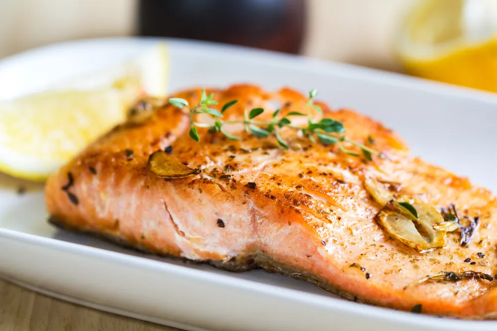

The Most Nutritious Foods in the World

We all have a pretty good idea of what wouldn’t qualify as the most nutritious foods in the world—for many of us, they’re our favorite things to eat: burgers, spaghetti, tacos, chocolate, potato chips. However, eating these foods every day could leave you overweight and low on energy.
A balanced diet with a wide variety of foods from every food group is always recommended. But these foods have the potential to be the best types of foods in the world when it comes to nutrition, and some of the results may surprise you…
Kale
By this point in time, it’s probably no surprise that kale is one of the world’s healthiest foods. That’s because it’s been the focus of health experts for a few years now, with those same experts recommending that we eat as much kale as possible. But why is that so important? Well, aside from being low on calories and free on fat, kale is loaded with vitamins, minerals, antioxidants and natural fiber.
Put simply, kale keeps you going and helps you feel better than many other foods. If you’re worried about the taste of kale, which can be slightly bitter, try adding it to stews and sauces. Chances are you’ll never notice it’s there, even as it goes about having a significant impact on how you feel.
Seaweed
In many parts of the world, seaweed has been a central part of a healthy diet for centuries or, in some cases, even longer. But here in America, seaweed rarely makes an appearance outside of ethnic grocery stores or the local sushi joint. And that’s a bit of a shame.
You see, seaweed is actually a remarkably nutritious food. That’s because it’s loaded with minerals like calcium, iron, magnesium, and manganese, some of which can’t be found easily in many other types of fruits or vegetables. Seaweed also features lots of antioxidants that have the potential to reduce inflammation and help you recover from certain health conditions.
Garlic
Here’s one that most people will be very familiar with: even if you don’t usually eat what most people consider “health food”, chances are you’ve had your share of garlic, which is frequently added to foods from burgers and spaghetti sauce to soups, stews, and roasts. And no wonder it’s so popular—garlic is cheap and it adds a unique and popular flavor to all sorts of dishes.
But garlic is also incredibly healthy, being high in vitamins C, B1, and B6. It’s also full of calcium, potassium, copper, manganese and selenium. Scientists continue to investigate the health benefits of garlic and seem to discover new attributes all the time.
Shellfish
If you’re looking for foods that are really nutritious, keep your eyes peeled for foods that are high in protein and vitamins and nutrients but relatively low on fat and calories. Fitting the bill there: shellfish, from shrimp to crab and lobster. Aside from being some of the most delicious (and, unfortunately, often expensive) foods in the world, these are also extremely nutritious.
For example, clams are widely considered one of the best sources of vitamin B12, which can directly affect our energy levels. Oysters, meanwhile, are high in zinc, copper and vitamin D. And across this entire category the tendency is for the foods to be low in calories and fat and very high in protein, making them a great bet for anyone concerned about eating healthy.
Salmon
If you’re looking to lose weight and don’t mind eating meat, fish can be one of the best choices. That’s because it’s low in fat and calories and very high in protein, meaning it will keep you feeling full without weighing you down.
But salmon is, in many ways, even more impressive than other types of fish. That’s because it contains lots of omega-3 fatty acids, which have been shown to boost brain functionality and may even prevent the onset of some serious diseases. Salmon is also high in magnesium, potassium, and selenium, minerals that are all very good for your health. Our only tip: if possible choose fresh over farmed salmon, which tends to have less of the nutrients you’re looking for.
Blueberries
There are many different types of fruit, virtually all of which are great food choices in their own way. But blueberries are especially healthy because they’re packed with antioxidants that can reduce inflammation and boost our chances of staving off or recovering from various illnesses.
Blueberries are also high in something called phytochemicals, which have been linked to better brain functionality (such as improved memory). As for their taste, it’s hard to deny the deliciousness of fresh, ripe blueberries, which can be an excellent snack on their own or when added to a fruit salad or smoothie.
Egg Whites
Hard boil an egg and slice it down the middle and you’ll see that there are essentially two major parts to this unique food item: the “white” underneath the shell and the yolk that makes up the inner core. Both the white and yolk contain protein, but the yolk is also heavy in fat and cholesterol.
Eating an entire egg isn’t a major problem, so long as it’s done in moderation. While the yolk is high in fat and cholesterol, these elements can help make you feel full for longer. But it’s the white that’s both high in protein and low in fat, meaning that isolating this part of the egg can be extremely beneficial for people looking to lose weight.
Carrots
When you think about eating carrots , one of the first thing that jumps to mind is Bugs Bunny, who constantly munched on the little orange veggies. If he were an actual human being, rather than just a talking rabbit, Bugs would have been one healthy guy.
That’s because carrots are loaded with vitamins and minerals. Carrots also contain beta-carotene, an organic compound that has been shown to help the human body fight a wide range of illnesses, from heart disease to macular degeneration. Carrots can even reduce the chances that you’ll get a nasty sunburn when spending a day in the sun.
Flaxseeds
Flaxseeds may not be delicious on their own, but by adding them to your meals—such as by placing them in sauces, stews or cereals—you can reap the benefits of their many healthy compounds.
For example, flaxseeds represent an excellent source of dietary fiber and omega-3 fatty acids, which have been shown to help the heart and brain. Because they’re so high in natural fiber, flaxseeds can also help keep you feeling full for longer, meaning you’re less likely to binge on something that’s high in salt, fat, sugar or calories.
Yogurt
If you’re looking for a simple and flavorful snack that can help keep your digestive system running properly, then look no further than yogurt. That’s because yogurt is loaded with probiotics, or bacteria that assists in making our bodies function normally.
Often referred to as “friendly” bacteria, probiotics help our bodies break down foods into nutrients more efficiently. That means yogurt, which is particularly high in probiotics, could be an excellent food choice for people who frequently deal with digestive problems, from stomach aches to constipation and diarrhea.
Potatoes
This one may surprise you. After all, potatoes can often be found in some of the world’s least healthy foods, including french fries, poutine, hash browns, tater tots, etc. But strip away all the grease, gravy and oil and you have a food that, when prepared with health in mind, can actually be very good for you.
That’s because potatoes contain lots of health vitamins and minerals, including copper, iron, magnesium, potassium, manganese, vitamin C and vitamin B. In essence, the basic potato is actually a little superfood. The trick is to prepare it in a healthy way: try cutting your potatoes up into long slices and tossing them in a little garlic powder, thyme, salt, pepper and extra virgin olive oil. Then put them in the oven to bake on high heat for about 20 minutes. In the end, you should have crispy, low-fat french fries that pack all of the good stuff and far less of the bad stuff.
Liver
For generations, cooked liver was one of the most popular meal choices, but in recent decades it’s got something of a bad reputation. That, however, is a shame, because liver could be considered one of the world’s healthiest foods.
That’s because the liver, which is a storage unit for many of the body’s most important nutrients, is simply loaded with vitamins and minerals. It typically contains lots of vitamins B12, B6, B5, and B2. It’s also loaded down with vitamin A, copper, zinc, selenium and, of course, protein. In short, it’s one of the healthiest meat products available.
Dark Chocolate
Whether you’re on a diet or not, you’re bound to get a craving for something sweet. Ideally, you’d reach for something naturally sweet, such as an apple, blueberries, or mango. But sometimes fruit just won’t cut it.
Dark chocolate, when consumed in moderation, can be an excellent food choice. That’s because it’s loaded down with iron, magnesium, copper, manganese and fiber, all of which can help you reach your health goals. Of course, it’s also sweet, meaning it can help you satisfy your sweet tooth craving without throwing a wrench in your diet goals.
Sardines
They may not be everyone’s cup of tea, but sardines—the tiny and very oily fish that’s usually eaten whole — are remarkably healthy. How so? The key to their nutrition is the fact that you’re supposed to eat the whole fish, including the bones, skin, and organs.
These parts of the fish, which are rarely eaten when the fish is much larger, are incredibly healthy, packing all kinds of vitamins and minerals. Sardines are also high in omega-3 fatty acids, which can help protect us against many life-altering illnesses.
Source: https://activebeat.com/health-news/the-14-most-nutritious-foods-in-the-world/